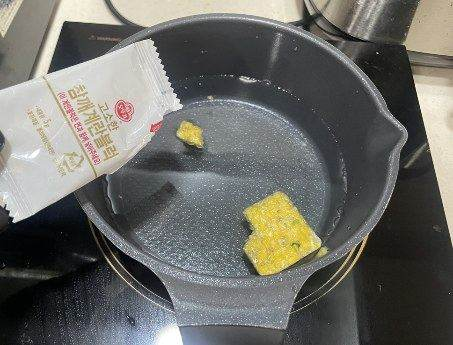
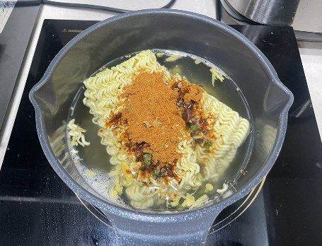
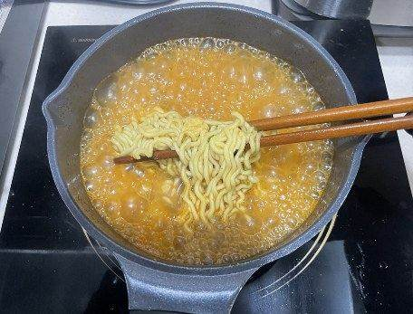
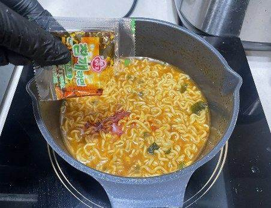
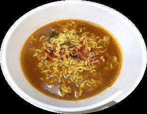

| 메뉴명 | 참깨라면 |
|---|---|
| 판매가격 | 4,500원 |
| 원재료 | 참깨라면 |
| 사용 부자재 | 라면용기 |
| 메뉴특징 | 고소한 들기름 맛이 일품인 참깨라면 |





※ 토핑추가 ※
▶계란: 타이머 1분 남았을 때 넣기
▶만두: 물 끓으면 넣기(면 넣을 때)
▶치즈: 그릇에 라면 옮겨 담은 뒤
마지막에 올려주기
(치즈 먼저 꺼내 놓지 않기)
※ 기존 라면조리기:
[일반라면]모드로 조리하기
※ 제조 후 최대한 빨리 제공할 것.